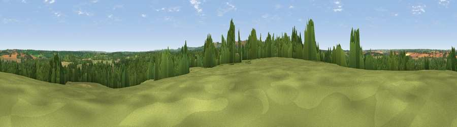

Viewpoint near Kintbury
#26238 in England · top 42% of its area beats it · near KintburyThe view, rendered

A 360° render of this exact spot computed from the terrain model, tree cover and land cover — summer colours, afternoon light, calibrated against photographs of famous viewpoints. Real trees, hedges and buildings will differ in detail.
The panorama
Grey silhouette: terrain skyline in each direction (720 bearings, Earth curvature and refraction included). Dashed green: skyline with trees (+15 m) and buildings (+8 m) as obstacles. Blue strip: how far the ground is visible on each bearing.
Where the view opens
Wedge length = distance to the farthest visible ground on that bearing (vegetation-aware). Rings at 10, 25 and 50 km.
What fills the view
49% grassland · 35% woodland · 13% cropland · 2% built-up
Angular shares of the visible panorama (visual magnitude), not map area. Landscape diversity 0.47 (0–1 Shannon).
Key numbers
More beautiful places nearby
The staircase of upgrades: each row has a higher view potential than everything closer. Driving times are estimates from straight-line distance, calibrated against real road routing — check an actual route before setting out.
| Place | Direction | Drive | Score |
|---|---|---|---|
| Gallows Down | SSW · 4 km | ~10 min | 75.6 |
| Beacon Hill | SE · 11 km | ~21 min | 76.7 |
| Martinsell viewpoint | W · 21 km | ~35 min | 77.3 |
| Viewpoint near Buriton | SE · 56 km | ~78 min | 80.0 |
| Beacon Hill | SE · 63 km | ~86 min | 85.8 |
| Mottistone Down | S · 81 km | ~105 min | 87.2 |
| St Catherines Hill | S · 89 km | ~114 min | 87.6 |
| Viewpoint near St. Lawrence | S · 90 km | ~114 min | 88.2 |
51.39104, -1.44340 · source: screening · position refined by local search. Computed location — check access rights before visiting.